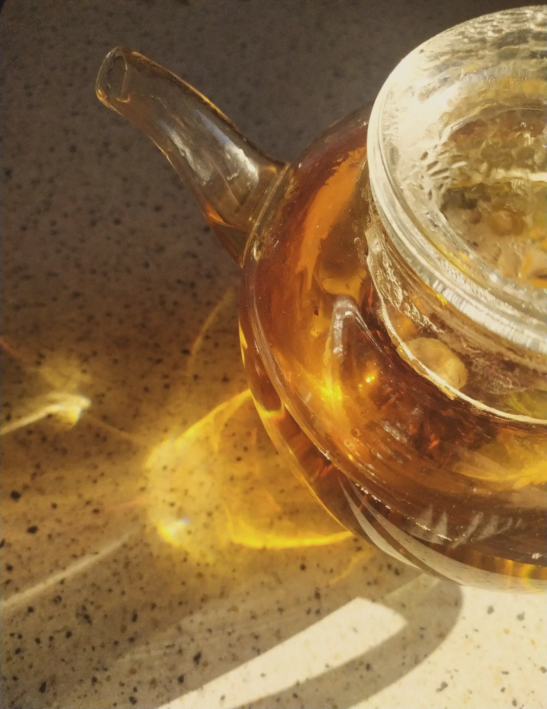
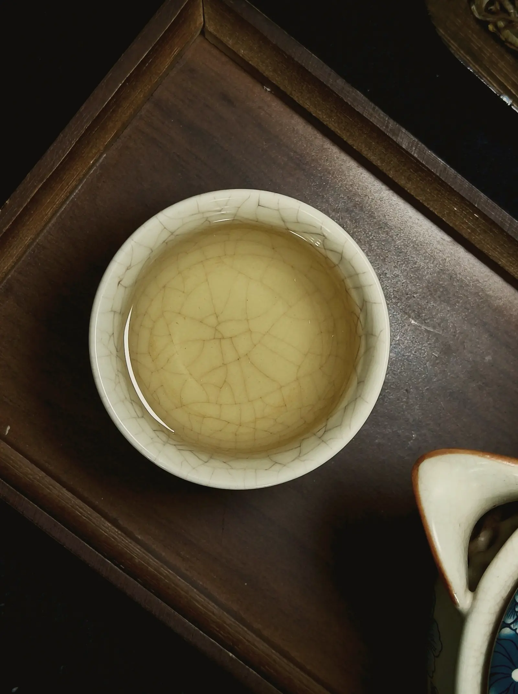
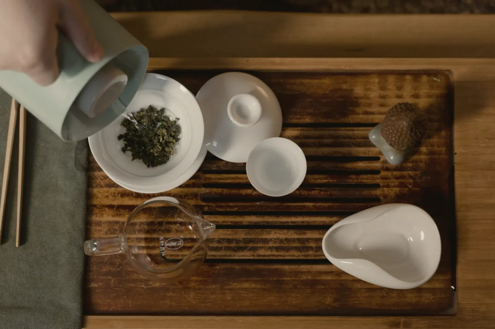
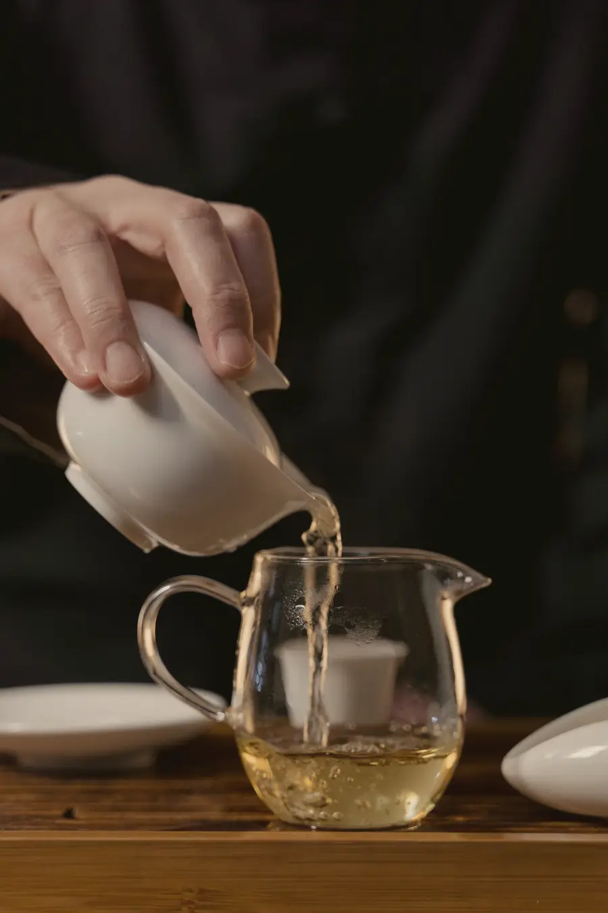

Give the knot room and heat.
Rolled leaf opens slowly, so it wants hotter water and more time than a green tea, and a pot with space to swell into. After that there are three good ways to drink it.

A pot, four steeps.
5 g of leaf, about two heaped teaspoons of knots, in a 300 ml pot. Water at 95 °C, which is the kettle a minute off the boil. The first steep is the one on the front page.
Pour every drop out each time. The second steep is shorter than the first, because the leaf is already open; after that it needs longer again as it gives up what it has.
| Steep | Time | Total time |
|---|---|---|
| First | 3 min | 3:00 |
| Second | 2 min | 5:00 |
| Third | 3 min | 8:00 |
| Fourth | 5 min | 13:00 |
Four pots from one dose, 13 min of steeping in all.


Seven short steeps.
More leaf, less water, boiling water, and short steeps poured off completely into a pitcher. A quick rinse first wakes the knots up; tip it away.
This is how the garden drinks it, and it is the clearest way to taste the roast turning over: steeps two and three are the sweetest.
| Steep | Time | Total time |
|---|---|---|
| Rinse | 5 s | 0:05 |
| 1 | 45 s | 0:50 |
| 2 | 25 s | 1:15 |
| 3 | 35 s | 1:50 |
| 4 | 50 s | 2:40 |
| 5 | 1 min 20 s | 4:00 |
| 6 | 2 min | 6:00 |
| 7 | 3 min | 9:00 |
7 steeps and a rinse in 9 min of water. A tin is 16 sessions.
Cold, overnight.
10 g of leaf in 1,000 ml of cold filtered water, lid on, in the fridge for 8 hours. Strain it in the morning. Cold water pulls the sugar and the roast and leaves most of the bitterness behind, so it is hard to get wrong.
A tin makes 10 litres this way.
When the cup is off.
- Bitter, drying the tongue
- Too long, or leaf left sitting in the pot. Pour off completely, and take 30 seconds off the next steep.
- Thin and scented, no body
- Poured too early, or the water was too cool for rolled leaf. Use water a minute off the boil and wait for the full time.
- Smoky, like a campfire
- Freshly roasted oolong can be sharp for a few weeks. Ours is rested before it is packed; if a tin still tastes of smoke, leave it open a day.
- The leaves never opened
- The pot was too small or the dose too big. The knots need to swell to four or five times their size; give them room.